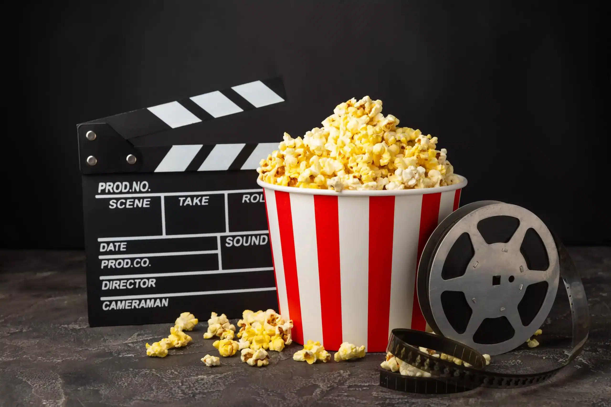
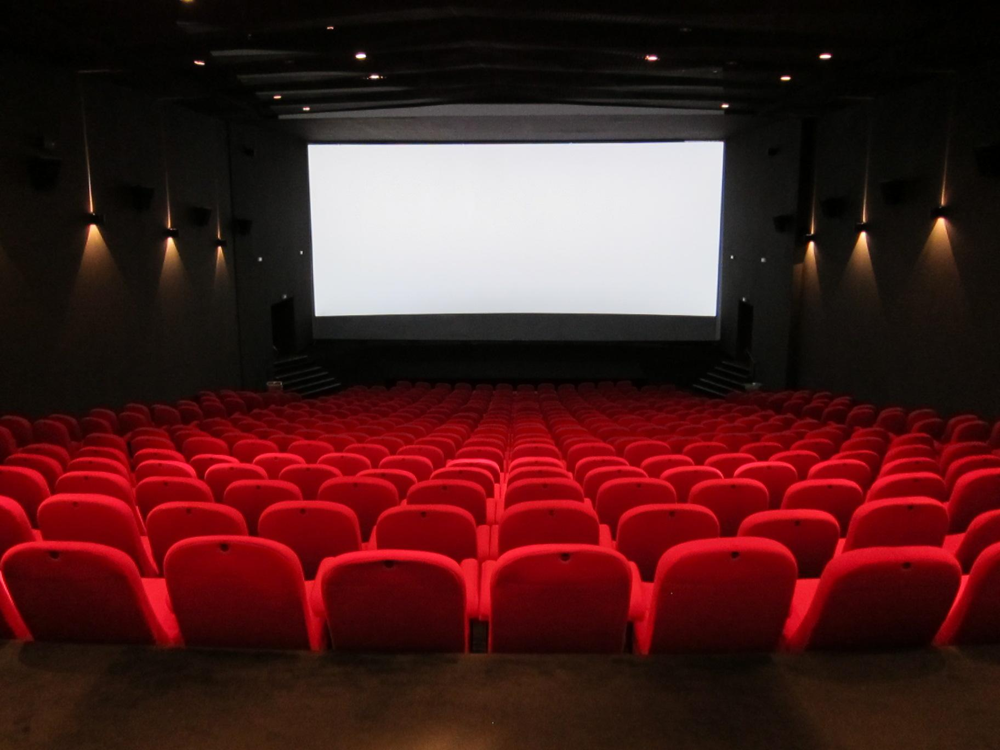
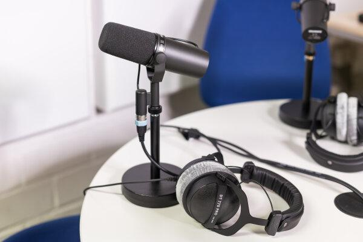
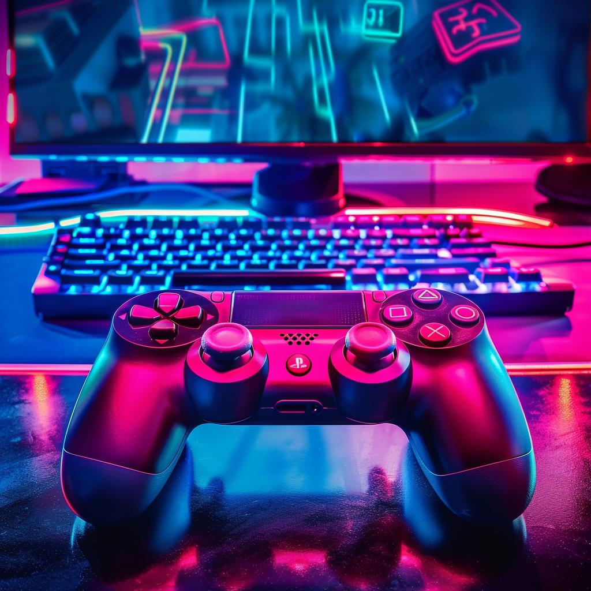
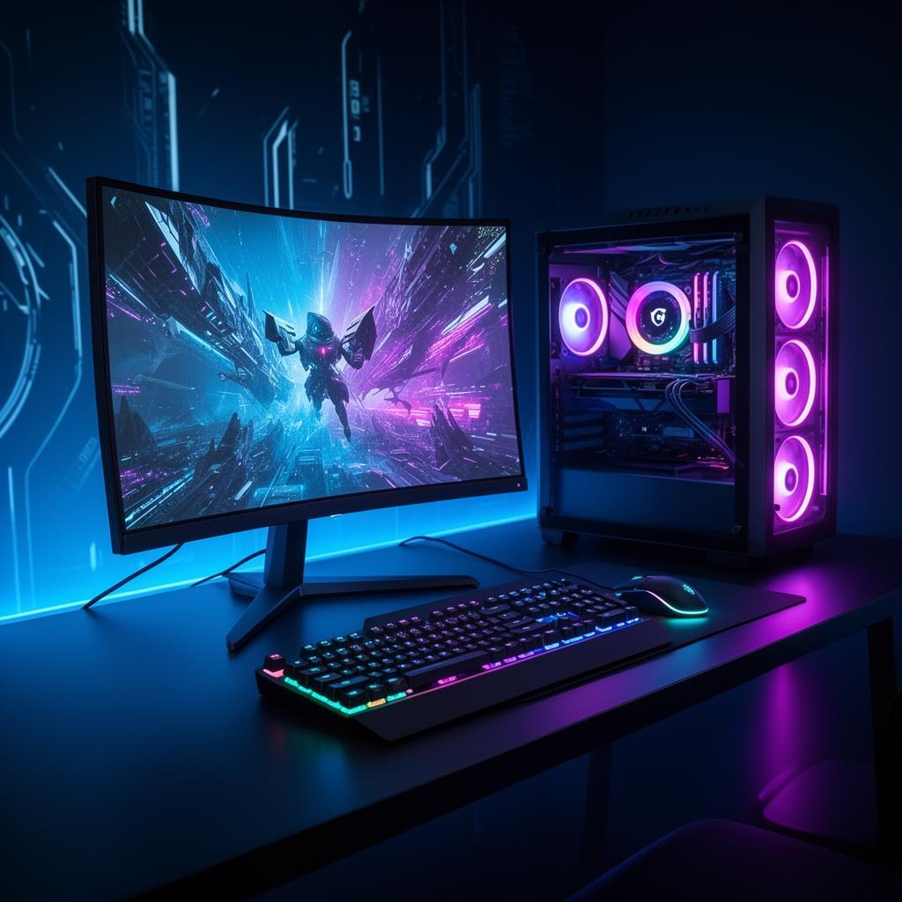

Filmes e Séries


Filmes e séries são ótimas opções de entretenimento. Podemos conhecer novas histórias, personagens e culturas por meio de diferentes gêneros e produções.
Prepare a pipoca e escolha sua próxima história!
Música e Podcasts

A música faz parte do nosso dia a dia e ajuda a expressar sentimentos. Os podcasts também são uma forma prática de aprender e conhecer diferentes assuntos.
Existem conteúdos para todos os gostos e estilos!
Games e Tecnologia


Os games e a tecnologia estão cada vez mais presentes em nossas vidas. Os jogos proporcionam diversão, desafios e experiências interativas.
A tecnologia também transforma a maneira como trabalhamos, estudamos e nos comunicamos.